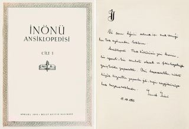

TARİH
Cumhuriyet döneminde devlet tarafından çıkarılan ilk telif ansiklopedidir. Millî bir ansiklopedi yayımlama düşüncesi 2-5 Mayıs 1939 tarihlerinde Ankara’da toplanan I. Türk Neşriyat Kongresi’nde ortaya çıktı. Bunun üzerine Maarif Vekâleti, umumi bir Türk ansiklopedisinin neşri amacıyla çalışmalara başlayıp 1 Ocak 1941’de bir büro kurdu. Dönemin Maarif vekili Hasan Âli Yücel, Cumhurbaşkanı İsmet İnönü’den ansiklopediye isminin verilmesi için izin istedi, olumlu cevap alınca yeni kurulan büroya İnönü Ansiklopedisi Bürosu adı verildi. Büro başlıca dünya ansiklopedilerinin nasıl hazırlandığını, Türkiye’de bunun nasıl yürütülebileceğini ve eserde yer alacak maddeleri tesbit etmekle işe başladı. Bu çalışmalar neticesinde 1941 yılı Ağustosunda İnönü Ansiklopedisi Program ve Direktif Projesi adıyla bir kitapçık bastırılarak ilim ve fikir adamlarına gönderildi ve görüşlerini bildirmeleri istendi. Gelen görüşler incelendikten sonra 24 Ocak 1942’de Cumhurbaşkanı İsmet İnönü’nün katıldığı bir toplantıda Hasan Âli Yücel’in başkanlığında yapılan müzakerelerde ansiklopedi programına son şekli verildi. 9 Şubat 1942’de basılan ve yirmi altı maddeden oluşan programa göre İnönü Ansiklopedisi, bir sözlük veya monografiler mecmuası yahut ilmî maddelerin fihristi mahiyetinde bir eser olmayacak, bütün ülkelerin ilmî ve fikrî birikimi yanında bilhassa Türklüğe, doğu ülkelerine ve Müslümanlığa ait bilgiler için önemli bir başvuru kaynağı şeklinde hazırlanacaktı.

Türk Ansiklopedisi’nin İnönü adıyla çıkan birinci cildinin iç kapağıyla aynı cildin giriş kısmında yer alan İsmet İnönü’nün el yazısıyla takdimi